from datetime import date, time, datetime, timedelta
stamp = datetime(2026, 1, 15, 14, 30)
delta = timedelta(days=2, hours=3)
print(stamp)
print(stamp + delta)2026-01-15 14:30:00
2026-01-17 17:30:00Time Series Graphics for Data Analytics
By the end of the lesson, students will be able to:
The representation must match what the observation actually measures.
A line can display either, but lag 1 has a stable duration only under a regular calendar.
from datetime import date, time, datetime, timedelta
stamp = datetime(2026, 1, 15, 14, 30)
delta = timedelta(days=2, hours=3)
print(stamp)
print(stamp + delta)2026-01-15 14:30:00
2026-01-17 17:30:00date: calendar date;time: time of day;datetime: date and time;timedelta: elapsed duration.raw_dates = pd.Series([
"2026-01-15", "15/02/2026", "March 20, 2026", "invalid"
])
parsed = pd.to_datetime(
raw_dates, format="mixed", dayfirst=True, errors="coerce"
)
pd.DataFrame({"raw": raw_dates, "parsed": parsed})| raw | parsed | |
|---|---|---|
| 0 | 2026-01-15 | 2026-01-15 |
| 1 | 15/02/2026 | 2026-02-15 |
| 2 | March 20, 2026 | 2026-03-20 |
| 3 | invalid | NaT |
errors="coerce" exposes failures as missing timestamps. It does not repair their meaning.
stamp = pd.Timestamp("2026-01-15 14:30")
print(stamp.strftime("%Y-%m-%d"))
print(stamp.strftime("%d %b %Y, %H:%M"))2026-01-15
15 Jan 2026, 14:30Formatting changes display, not the underlying temporal value.
DatetimeIndex: time as an analytical axisidx = pd.date_range("2026-01-01", periods=6, freq="D")
series = pd.Series([72, 74, 73, 77, 78, 76], index=idx, name="value")
print(type(series.index).__name__)
seriesDatetimeIndex2026-01-01 72
2026-01-02 74
2026-01-03 73
2026-01-04 77
2026-01-05 78
2026-01-06 76
Freq: D, Name: value, dtype: int64A timestamp-indexed Series supports temporal slicing, frequency logic, shifting, and resampling.
2026-01-02 74
2026-01-03 73
2026-01-04 77
2026-01-05 78
Freq: D, Name: value, dtype: int64daily = pd.Series(
np.arange(90),
index=pd.date_range("2026-01-01", periods=90, freq="D")
)
daily.loc["2026-02"].head()2026-02-01 31
2026-02-02 32
2026-02-03 33
2026-02-04 34
2026-02-05 35
Freq: D, dtype: int64Partial strings can select meaningful calendar ranges.
duplicate_time = pd.Series(
[70, 72, 74, 76],
index=pd.to_datetime([
"2026-01-01", "2026-01-02", "2026-01-02", "2026-01-03"
])
)
print("unique index:", duplicate_time.index.is_unique)
duplicate_time.groupby(level=0).agg(["mean", "count"])unique index: False| mean | count | |
|---|---|---|
| 2026-01-01 | 70.0 | 1 |
| 2026-01-02 | 73.0 | 2 |
| 2026-01-03 | 76.0 | 1 |
Aggregation resolves duplicates only when the rule is analytically justified.
print(pd.date_range("2026-01-01", periods=5, freq="D"))
print(pd.date_range("2026-01-01 00:00", periods=5, freq="15min"))
print(pd.date_range("2026-01-01", periods=5, freq="B"))DatetimeIndex(['2026-01-01', '2026-01-02', '2026-01-03', '2026-01-04', '2026-01-05'], dtype='datetime64[ns]', freq='D')
DatetimeIndex(['2026-01-01 00:00:00', '2026-01-01 00:15:00', '2026-01-01 00:30:00', '2026-01-01 00:45:00',
'2026-01-01 01:00:00'],
dtype='datetime64[ns]', freq='15min')
DatetimeIndex(['2026-01-01', '2026-01-02', '2026-01-05', '2026-01-06', '2026-01-07'], dtype='datetime64[ns]', freq='B')Frequency aliases encode calendar rules, not merely display labels.
irregular = pd.Series(
[10, 12, 15],
index=pd.to_datetime(["2026-01-01", "2026-01-03", "2026-01-06"])
)
irregular.asfreq("D")2026-01-01 10.0
2026-01-02 NaN
2026-01-03 12.0
2026-01-04 NaN
2026-01-05 NaN
2026-01-06 15.0
Freq: D, dtype: float64asfreq establishes a target calendar. It does not aggregate or justify filling gaps.
shift_demo = pd.Series(
[100, 102, 101, 105],
index=pd.date_range("2026-01-01", periods=4, freq="D")
)
print(shift_demo.shift(1))
print(shift_demo.shift(1, freq="D"))2026-01-01 NaN
2026-01-02 100.0
2026-01-03 102.0
2026-01-04 101.0
Freq: D, dtype: float64
2026-01-02 100
2026-01-03 102
2026-01-04 101
2026-01-05 105
Freq: D, dtype: int64shift(1): moves values relative to the existing index.shift(1, freq="D"): moves the timestamps by a calendar offset.naive = pd.date_range("2026-01-15 09:00", periods=3, freq="h")
dublin = naive.tz_localize("Europe/Dublin")
utc = dublin.tz_convert("UTC")
print(dublin)
print(utc)DatetimeIndex(['2026-01-15 09:00:00+00:00', '2026-01-15 10:00:00+00:00', '2026-01-15 11:00:00+00:00'], dtype='datetime64[ns, Europe/Dublin]', freq=None)
DatetimeIndex(['2026-01-15 09:00:00+00:00', '2026-01-15 10:00:00+00:00', '2026-01-15 11:00:00+00:00'], dtype='datetime64[ns, UTC]', freq=None)tz_localize: attaches a zone to naive timestamps.tz_convert: represents the same instants in another zone.UTC supports consistent storage and cross-region alignment. Local time remains important for:
Derive seasonal coordinates in the calendar relevant to the phenomenon.
month = pd.Period("2026-01", freq="M")
quarter = pd.Period("2026Q1", freq="Q-DEC")
print(month)
print(month + 2)
print(quarter)2026-01
2026-03
2026Q1Period arithmetic moves across spans according to the declared frequency.
month_ends = pd.date_range("2026-01-31", periods=4, freq="ME")
periods = month_ends.to_period("M")
print(periods)
print(periods.to_timestamp(how="end"))PeriodIndex(['2026-01', '2026-02', '2026-03', '2026-04'], dtype='period[M]')
DatetimeIndex(['2026-01-31 23:59:59.999999999', '2026-02-28 23:59:59.999999999', '2026-03-31 23:59:59.999999999',
'2026-04-30 23:59:59.999999999'],
dtype='datetime64[ns]', freq=None)Converting a period to a timestamp requires a boundary convention.
hourly = pd.Series(
np.arange(24, dtype=float),
index=pd.date_range("2026-01-01", periods=24, freq="h")
)
hourly.resample("6h").agg(["mean", "max"])| mean | max | |
|---|---|---|
| 2026-01-01 00:00:00 | 2.5 | 5.0 |
| 2026-01-01 06:00:00 | 8.5 | 11.0 |
| 2026-01-01 12:00:00 | 14.5 | 17.0 |
| 2026-01-01 18:00:00 | 20.5 | 23.0 |
boundary = pd.Series(
[1, 2, 3, 4],
index=pd.to_datetime([
"2026-01-01 00:00", "2026-01-01 05:59",
"2026-01-01 06:00", "2026-01-01 11:59"
])
)
boundary.resample("6h", closed="left", label="left").sum()2026-01-01 00:00:00 3
2026-01-01 06:00:00 7
Freq: 6h, dtype: int64closed controls interval membership; label controls interval naming.
observed = pd.Series(
[10, 13, 12, 16, 17, 15, 18],
index=pd.date_range("2026-01-01", periods=7, freq="D")
)
windows = pd.DataFrame({
"observed": observed,
"rolling_mean_3": observed.rolling(3, min_periods=2).mean(),
"expanding_mean": observed.expanding(min_periods=2).mean(),
"ewm_mean": observed.ewm(span=3, adjust=False).mean()
})
windows.head()| observed | rolling_mean_3 | expanding_mean | ewm_mean | |
|---|---|---|---|---|
| 2026-01-01 | 10 | NaN | NaN | 10.0000 |
| 2026-01-02 | 13 | 11.500000 | 11.500000 | 11.5000 |
| 2026-01-03 | 12 | 11.666667 | 11.666667 | 11.7500 |
| 2026-01-04 | 16 | 13.666667 | 12.750000 | 13.8750 |
| 2026-01-05 | 17 | 15.000000 | 13.600000 | 15.4375 |
The pandas toolkit establishes:
Only then can time plots, seasonal plots, lag plots, and ACF plots be interpreted reliably.
Which visualizations reveal the temporal structures?
Time order → pattern → seasonality → relationships → dependence → diagnostic judgment
A time-series graph can reveal:
hours = pd.date_range("2026-01-01", periods=24 * 90, freq="h")
t = np.arange(len(hours))
hour = hours.hour.to_numpy()
dow = hours.dayofweek.to_numpy()
day = np.arange(len(hours)) / 24
temperature = 17 + 7 * np.sin(2 * np.pi * (hour - 14) / 24) + 3 * np.sin(2 * np.pi * day / 45)
weekend = dow >= 5
daily_cycle = 9 * np.sin(2 * np.pi * (hour - 7) / 24) + 4 * np.sin(4 * np.pi * (hour - 7) / 24)
weekly_effect = np.where(weekend, -8, 0)
trend = 0.025 * day
noise = rng.normal(0, 2.2, len(hours))
demand = 72 + trend + daily_cycle + weekly_effect + 0.35 * (temperature - 17) ** 2 + noise
ts = pd.DataFrame({
"timestamp": hours,
"demand_mw": demand,
"temperature_c": temperature,
"is_weekend": weekend
})
ts.loc[450, "demand_mw"] += 28
ts.head(3 )| timestamp | demand_mw | temperature_c | is_weekend | |
|---|---|---|---|---|
| 0 | 2026-01-01 00:00:00 | 70.264545 | 20.500000 | False |
| 1 | 2026-01-01 01:00:00 | 61.884150 | 18.829187 | False |
| 2 | 2026-01-01 02:00:00 | 62.960170 | 17.034906 | False |
timestamp.demand_mw.temperature_c.is_weekend.print(ts.shape)
print(ts.dtypes)
print("unique timestamps:", ts["timestamp"].is_unique)
print("monotonic time:", ts["timestamp"].is_monotonic_increasing)(2160, 4)
timestamp datetime64[ns]
demand_mw float64
temperature_c float64
is_weekend bool
dtype: object
unique timestamps: True
monotonic time: Truets_indexed = ts.set_index("timestamp")
print(ts_indexed.index)
print(ts_indexed.columns)
ts_indexed.head(3)DatetimeIndex(['2026-01-01 00:00:00', '2026-01-01 01:00:00', '2026-01-01 02:00:00', '2026-01-01 03:00:00',
'2026-01-01 04:00:00', '2026-01-01 05:00:00', '2026-01-01 06:00:00', '2026-01-01 07:00:00',
'2026-01-01 08:00:00', '2026-01-01 09:00:00',
...
'2026-03-31 14:00:00', '2026-03-31 15:00:00', '2026-03-31 16:00:00', '2026-03-31 17:00:00',
'2026-03-31 18:00:00', '2026-03-31 19:00:00', '2026-03-31 20:00:00', '2026-03-31 21:00:00',
'2026-03-31 22:00:00', '2026-03-31 23:00:00'],
dtype='datetime64[ns]', name='timestamp', length=2160, freq=None)
Index(['demand_mw', 'temperature_c', 'is_weekend'], dtype='object')| demand_mw | temperature_c | is_weekend | |
|---|---|---|---|
| timestamp | |||
| 2026-01-01 00:00:00 | 70.264545 | 20.500000 | False |
| 2026-01-01 01:00:00 | 61.884150 | 18.829187 | False |
| 2026-01-01 02:00:00 | 62.960170 | 17.034906 | False |
A time index makes ordering, slicing, resampling, and lag construction explicit.
Timestamp: an instant in time.Period: a span associated with a frequency.print("inferred frequency:", pd.infer_freq(ts_indexed.index))
print("expected observations:", len(pd.date_range(
ts_indexed.index.min(), ts_indexed.index.max(), freq="h"
)))inferred frequency: h
expected observations: 2160A regular frequency defines what “lag 1,” “season,” and “consecutive” mean.
broken = pd.concat([ts.iloc[:100], ts.iloc[101:110], ts.iloc[[105]]], ignore_index=True)
print("duplicate timestamps:", broken["timestamp"].duplicated().sum())
expected = pd.date_range(broken["timestamp"].min(), broken["timestamp"].max(), freq="h")
missing_timestamps = expected.difference(pd.DatetimeIndex(broken["timestamp"]))
print("missing timestamps:", missing_timestamps.tolist())duplicate timestamps: 1
missing timestamps: [Timestamp('2026-01-05 04:00:00')]regular = (
broken.set_index("timestamp")
.loc[lambda d: ~d.index.duplicated(keep="first")]
.reindex(expected)
)
regular.loc[regular["demand_mw"].isna()].head()| demand_mw | temperature_c | is_weekend | |
|---|---|---|---|
| 2026-01-05 04:00:00 | NaN | NaN | NaN |
Reindexing makes missing periods explicit; it does not justify interpolation.
Graphs help reveal:
Visual features should inform the forecasting method considered later.
| Year | Observation | |
|---|---|---|
| 0 | 2015 | 123 |
| 1 | 2016 | 39 |
| 2 | 2017 | 78 |
| 3 | 2018 | 52 |
| 4 | 2019 | 110 |
A DataFrame has two labeled axes: an index for rows and columns for variables.
RangeIndex(start=0, stop=5, step=1)
Index(['Year', 'Observation'], dtype='object')
Year int64
Observation int64
dtype: object
<class 'pandas.core.series.Series'>Timestamp('2020-01-01 00:00:00')
Period('2020-01', 'M')Timestamp: a specific instant.Period: a span of time with a frequency.timestamps = pd.date_range("2020-01-01", periods=3, freq="D")
ts_frame = pd.DataFrame(index=timestamps)
ts_frame["date"] = ts_frame.index.date
ts_frame["year"] = ts_frame.index.year
ts_frame["label"] = ts_frame.index.strftime("%A, %B %-d")
ts_frame| date | year | label | |
|---|---|---|---|
| 2020-01-01 | 2020-01-01 | 2020 | Wednesday, January 1 |
| 2020-01-02 | 2020-01-02 | 2020 | Thursday, January 2 |
| 2020-01-03 | 2020-01-03 | 2020 | Friday, January 3 |
| Year | Length | Sex | Time | |
|---|---|---|---|---|
| 0 | 1896 | 100 | men | 12.0 |
| 1 | 1900 | 100 | men | 11.0 |
| 2 | 1904 | 100 | men | 11.0 |
key_columns = ["Length", "Sex"]
olympic_running.groupby(key_columns).size().rename("observations").head(3)Length Sex
100 men 31
women 23
200 men 30
Name: observations, dtype: int64A valid multi-series table needs a unique combination of identifying keys and time.
wide_demo = olympic_running.pivot_table(
index="Year", columns=["Length", "Sex"], values="Time"
)
wide_demo.head(3)| Length | 100 | 200 | 400 | ... | 1500 | 5000 | 10000 | ||||||
|---|---|---|---|---|---|---|---|---|---|---|---|---|---|
| Sex | men | women | men | women | men | women | ... | men | women | men | women | men | women |
| Year | |||||||||||||
| 1896 | 12.0 | NaN | NaN | NaN | 54.2 | NaN | ... | 273.2 | NaN | NaN | NaN | NaN | NaN |
| 1900 | 11.0 | NaN | 22.2 | NaN | 49.4 | NaN | ... | 246.2 | NaN | NaN | NaN | NaN | NaN |
| 1904 | 11.0 | NaN | 21.6 | NaN | 49.2 | NaN | ... | 245.4 | NaN | NaN | NaN | NaN | NaN |
3 rows × 14 columns
Long form is convenient for grouped operations and semantic mappings; wide form is useful for matrices and some comparisons.
pbs = (
pd.read_csv(DATA_PATH / "PBS_unparsed.csv", parse_dates=["Month"])
[["Month", "Concession", "Type", "ATC1", "ATC2", "Scripts", "Cost"]]
)
pbs.head()| Month | Concession | Type | ATC1 | ATC2 | Scripts | Cost | |
|---|---|---|---|---|---|---|---|
| 0 | 1991-07-01 | Concessional | Co-payments | A | A01 | 18228 | 67877.0 |
| 1 | 1991-08-01 | Concessional | Co-payments | A | A01 | 15327 | 57011.0 |
| 2 | 1991-09-01 | Concessional | Co-payments | A | A01 | 14775 | 55020.0 |
| 3 | 1991-10-01 | Concessional | Co-payments | A | A01 | 15380 | 57222.0 |
| 4 | 1991-11-01 | Concessional | Co-payments | A | A01 | 14371 | 52120.0 |
total_cost_df = pd.read_csv(DATA_PATH / "total_cost_df.csv")
a10 = pbs.loc[pbs["ATC2"] == "A10"]
total_cost_df = (
a10.groupby("Month", as_index=False)
.agg(Cost=("Cost", "sum"))
.assign(Cost=lambda x: x["Cost"] / 1e6)
)
total_cost_df.head()| Month | Cost | |
|---|---|---|
| 0 | 1991-07-01 | 3.526591 |
| 1 | 1991-08-01 | 3.180891 |
| 2 | 1991-09-01 | 3.252221 |
| 3 | 1991-10-01 | 3.611003 |
| 4 | 1991-11-01 | 3.565869 |
prison = (
pd.read_csv(DATA_PATH / "prison_population.csv", parse_dates=["Date"])
.rename(columns={"Date": "Quarter"})
.sort_values(["State", "Gender", "Legal", "Indigenous", "Quarter"])
)
prison.head()| Quarter | State | Gender | Legal | Indigenous | Count | |
|---|---|---|---|---|---|---|
| 0 | 2005-03-01 | ACT | Female | Remanded | ATSI | 0 |
| 64 | 2005-06-01 | ACT | Female | Remanded | ATSI | 1 |
| 128 | 2005-09-01 | ACT | Female | Remanded | ATSI | 0 |
| 192 | 2005-12-01 | ACT | Female | Remanded | ATSI | 0 |
| 256 | 2006-03-01 | ACT | Female | Remanded | ATSI | 1 |
| Observation interval | Frequent seasonal period |
|---|---|
| Quarter | 4 |
| Month | 12 |
| Week | about 52 |
| Day | 7 and about 365.25 |
| Hour | 24, 168, and about 8766 |
| Minute | 60, 1440, and 10080 |
A series may contain more than one seasonal pattern.
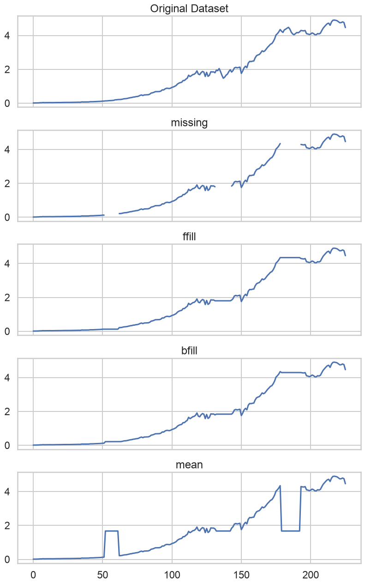
Look for:
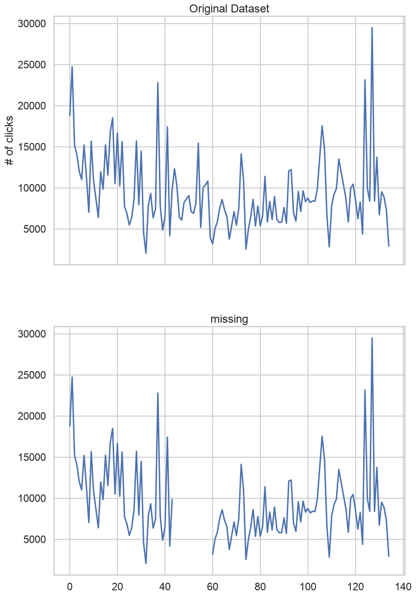
A forecasting method should be able to represent the patterns visible in the data.
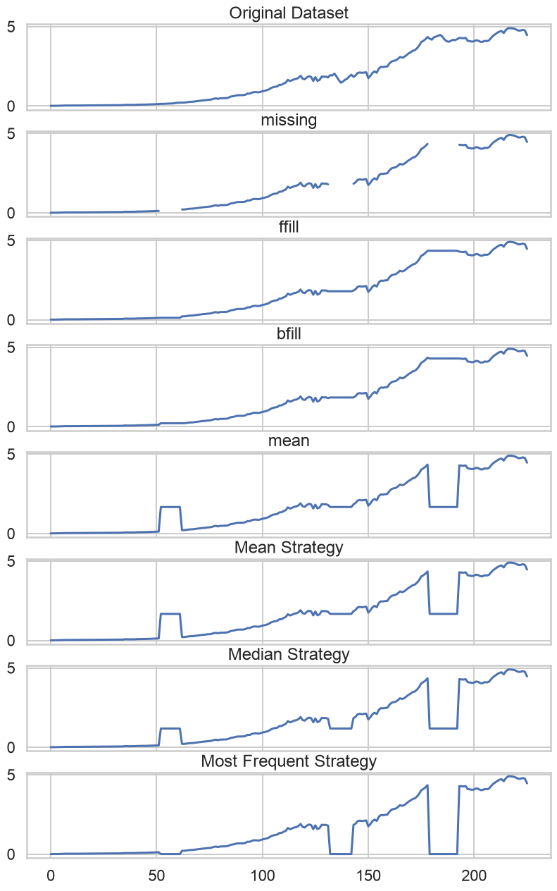
Half-hourly demand can show daily, weekly, and annual patterns.
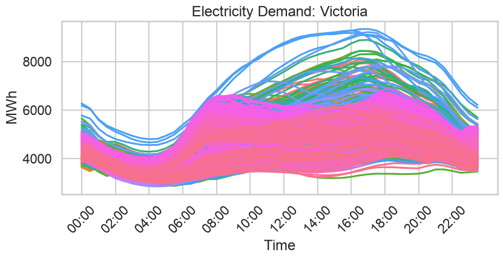
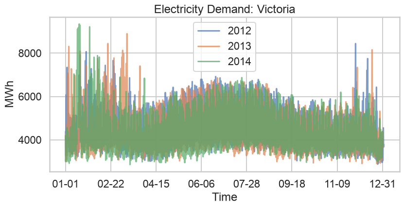
tourism = pd.read_csv(DATA_PATH / "tourism.csv", parse_dates=["ds"])
trips = (
tourism.loc[lambda x: x["Purpose"] == "Holiday"]
.groupby(["State", "ds"], as_index=False)
.agg(y=("y", "sum"))
)
trips.head()| State | ds | y | |
|---|---|---|---|
| 0 | ACT | 1998-01-01 | 196.218550 |
| 1 | ACT | 1998-04-01 | 126.770597 |
| 2 | ACT | 1998-07-01 | 110.679645 |
| 3 | ACT | 1998-10-01 | 170.472206 |
| 4 | ACT | 1999-01-01 | 107.779245 |
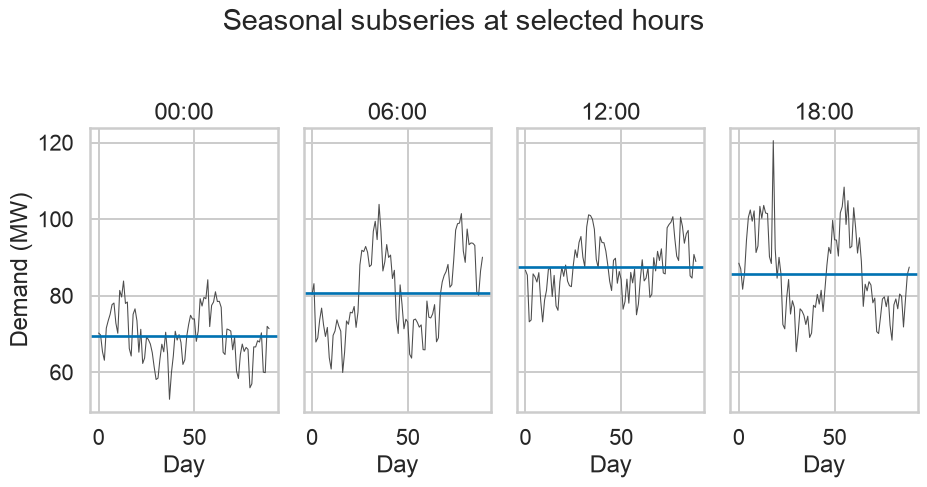
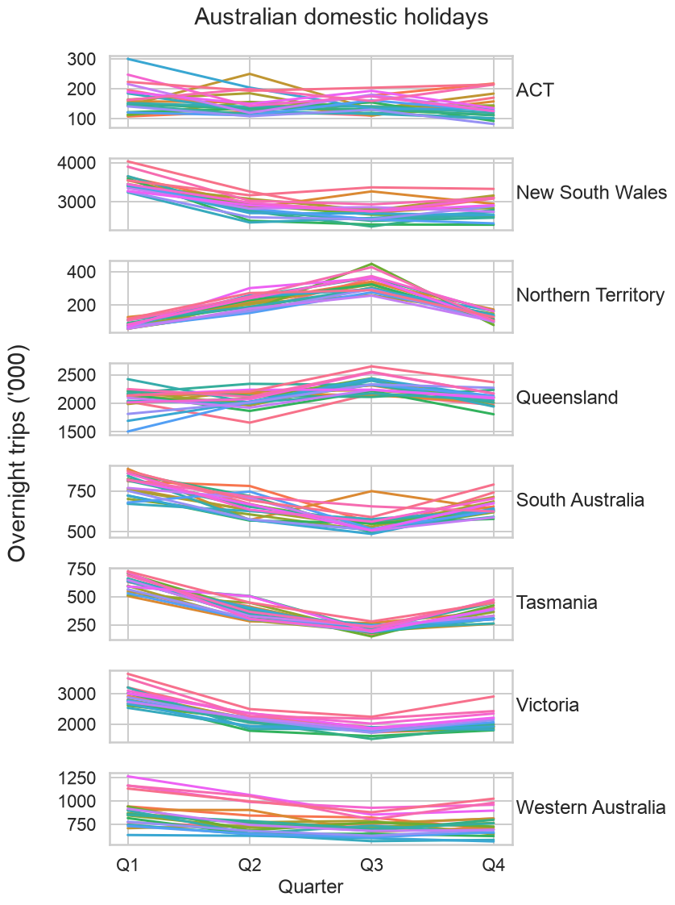
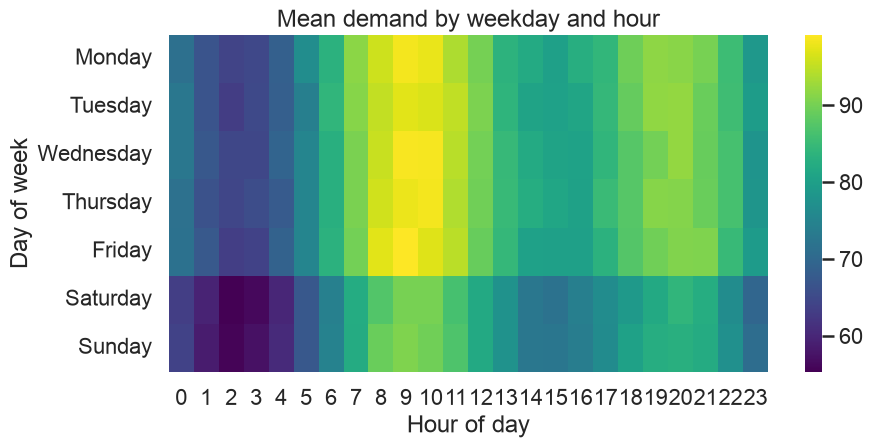
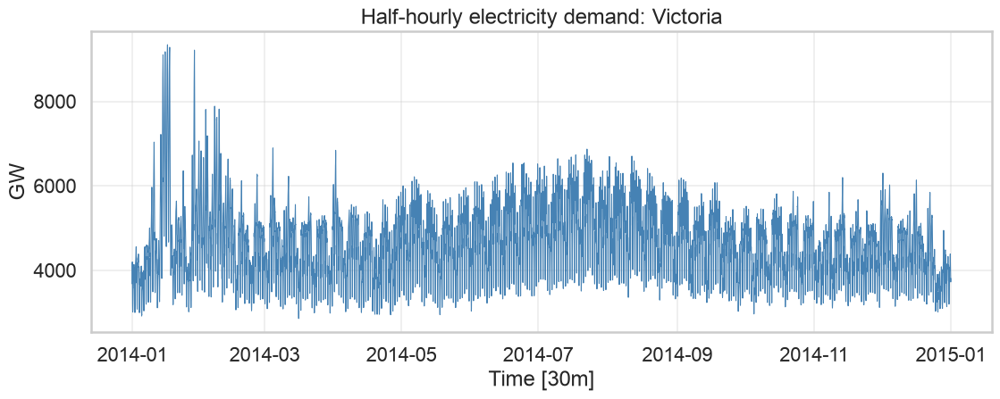
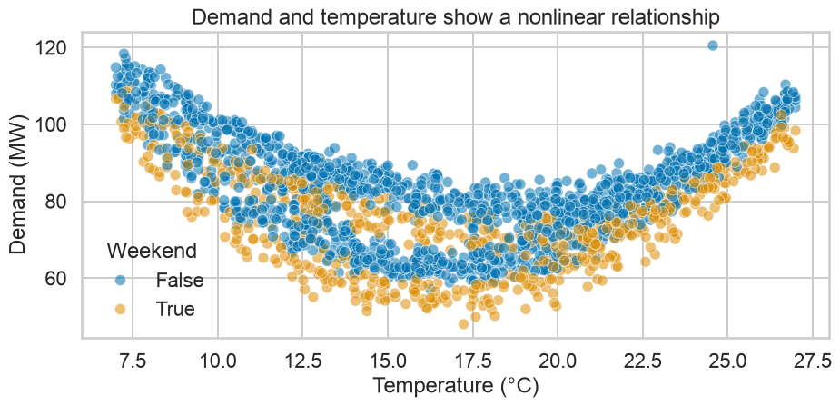
\[ r = \frac{\sum_t (x_t-\bar{x})(y_t-\bar{y})} {\sqrt{\sum_t(x_t-\bar{x})^2}\sqrt{\sum_t(y_t-\bar{y})^2}} \]
r lies between -1 and 1;r is modest.correlations = [-0.9, -0.5, 0, 0.5, 0.9]
fig, axes = plt.subplots(1, 5, figsize=(13, 3), sharex=True, sharey=True)
rng = np.random.default_rng(42)
for ax, rho in zip(axes, correlations):
values = rng.multivariate_normal([0, 0], [[1, rho], [rho, 1]], size=120)
ax.scatter(values[:, 0], values[:, 1], s=10, alpha=.55)
ax.set_title(f"r ≈ {np.corrcoef(values.T)[0,1]:.2f}")
plt.tight_layout()
plt.show()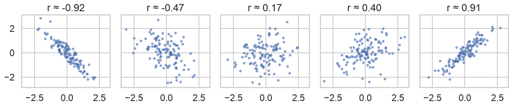
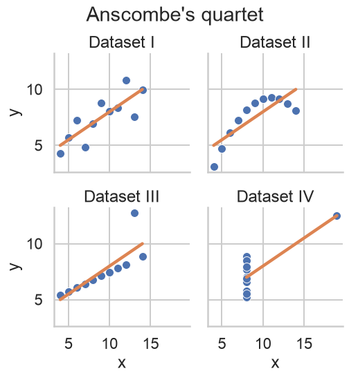
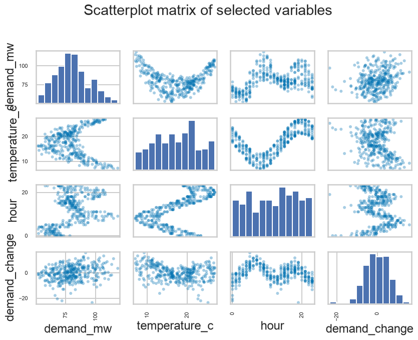
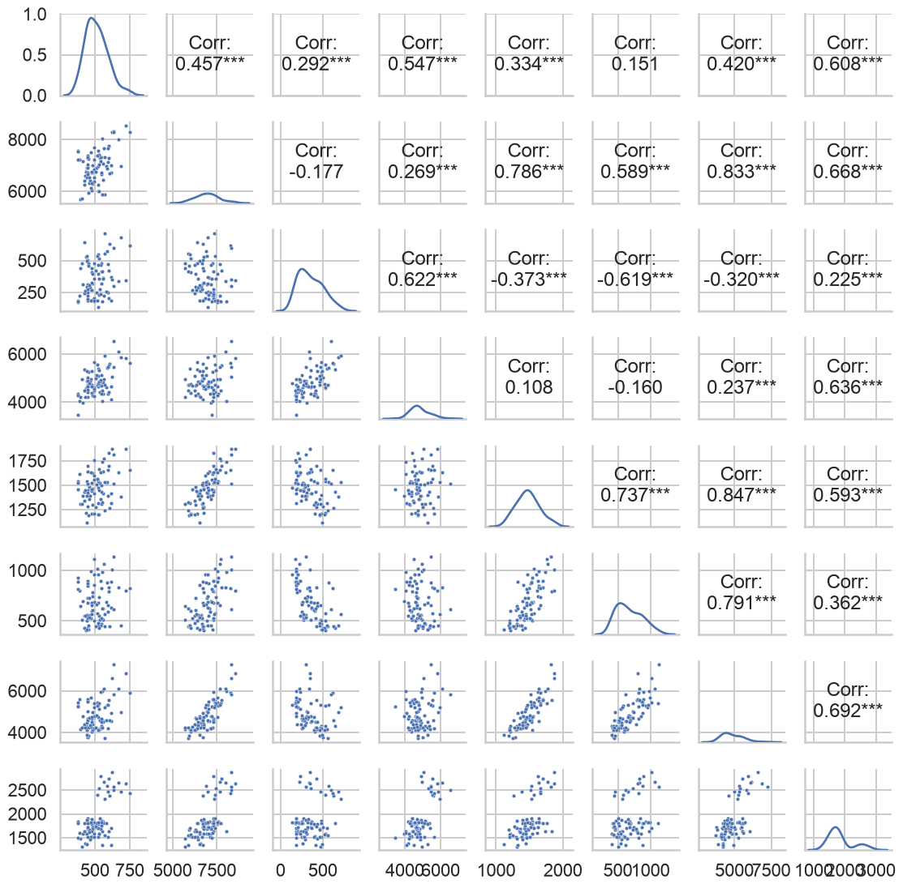
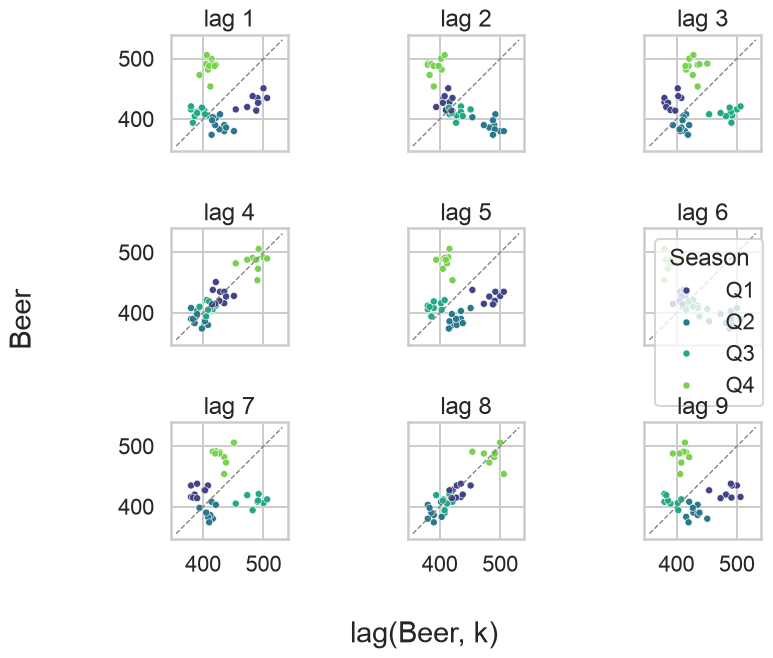
\[ r_k = \frac{\sum_{t=k+1}^{T}(y_t-\bar{y})(y_{t-k}-\bar{y})} {\sum_{t=1}^{T}(y_t-\bar{y})^2} \]
Autocorrelation measures linear association between a series and its lagged values. The collection of coefficients is the ACF.
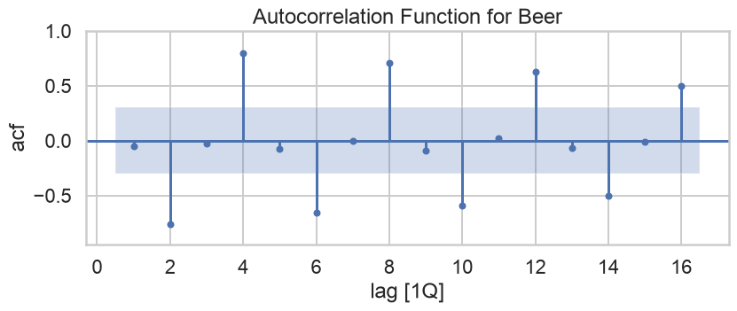
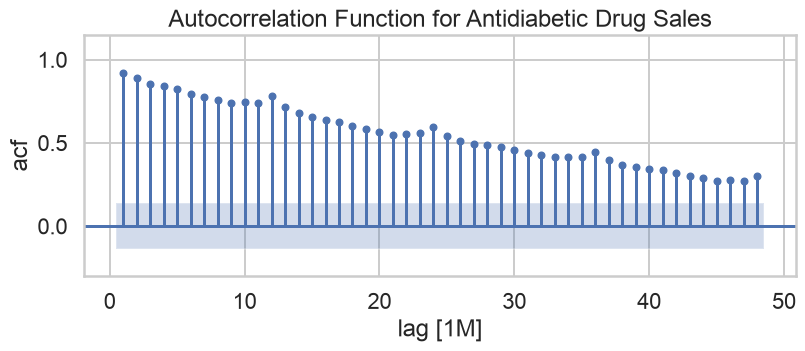
Bricks, Lynx, GOOG_Close, and Victorian Demand.gafa_stock.Sales, AdBudget, and GDP from tute1.csv.Attribution: concepts were adapted and rewritten from the cited references. Synthetic data, exercises, validation rules, and teaching narrative were created for this module.

Data Analytics & Visualization